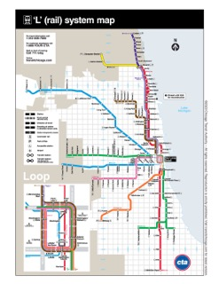

Why Chicago's Public Transit Works
Chicago's public transit system has been rated one of the best in the world, and the main reasons for this are simple. Chicago's public transit system is convenient, has great coverage of the city, and is affordable. Chicago is the home to 2000 buses and 140 stations, making it extremely convenient to use public transit. With the CTA being the second largest public transit system in the world, not only is the city covered with access to many neighborhoods and tourist attractions, so are 35 surrounding suburbs. Lastly, Chicago public transit is far more cheaper than maintaining and keeping up with a car. My personal experience with using CTA buses and trains has been amazing. It has allowed me to easily travel around the city, been clean, and I always felt safe. The "TransitStop" app has been extremely helpful and accurate in letting me know when and where I can catch the next bus. The city has found a great formula in transporting its people, and I am excited to see how it grows and improves.
